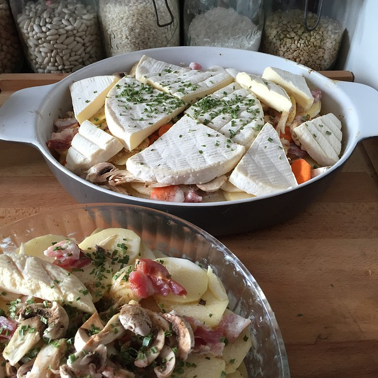

Back to home
The real Tartiflette

Description
Tartiflette is a French comfort dish hailing from the Savoie region, composed of layers of tender sliced potatoes, sautéed onions, crispy lardons, and creamy Reblochon cheese. Baked to golden perfection, it offers a delightful harmony of textures and flavors, with the cheese forming a gooey and indulgent topping that perfectly complements the hearty combination of ingredients. This dish captures the essence of Alpine cuisine and is a beloved choice for warm and satisfying meals, often paired with a fresh salad and a glass of wine.
Ingredients
- 7 onions
- 2 reblochon (we always do 2 and half ;))
- salt
- pepper
- 2.5kg of potatoes
- 300ml of creme fraiche
- 500 grams of lardons
- 200ml of white wine from Savoie
Steps
- Cook the potatoes in water for 20 minutes, then peel them and cut them into slices.
- Chop the onions and sauté them in a little butter.
- Add the smoked lardons and also leave to brown over a fairly low heat (about ten minutes), stirring regularly.
- Prepare a baking dish (I use a round terracotta dish 40 cm in diameter, 10 cm high). Generously rub the bottom of the dish with a clove of garlic.
- Arrange the dish in three layers: cover the bottom of the dish with half the potatoes, then add the onion and bacon mixture, finally add the rest of the potatoes on top.
- Pour over the white wine and the creme fraiche. Pepper (quite copiously) and salt (lightly).
- Preheat the oven to 190°C (thermostat 6-7).
- Scrape the reblochons, cut them in half lengthwise and place them (crust side up) on top of the potatoes.
- Bake for about 20 minutes (I put the oven on "fan-assisted" + grill). When serving (in the baking dish), you can sprinkle with a little chopped parsley. This unique dish is eaten (that's the right word!) accompanied by the wine used for the recipe.
- Bon Appétit